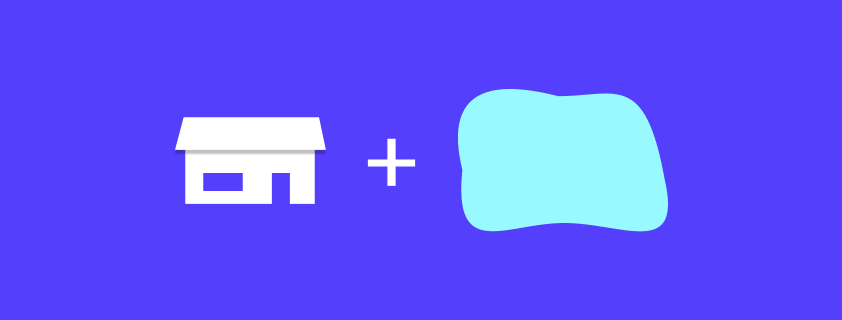
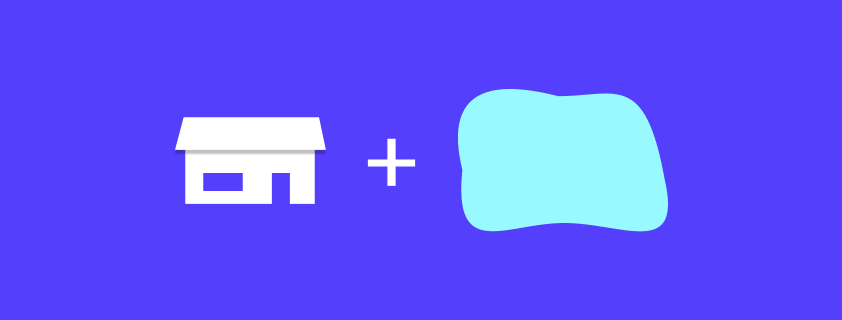

o nás
Izolejsn.cz je slezská řemeslná služba, kterou zajišťují dva zkušení a manuálně zruční majitelé. Zakládají si na přímém přístupu a cílem identity je naprosto odlišit jejich službu od běžné vizuální komunikace řemeslníků v regionu.
Izolejsn.cz je slezská řemeslná služba, kterou zajišťují dva zkušení a manuálně zruční majitelé. Zakládají si na přímém přístupu a cílem identity je naprosto odlišit jejich službu od běžné vizuální komunikace řemeslníků v regionu.
